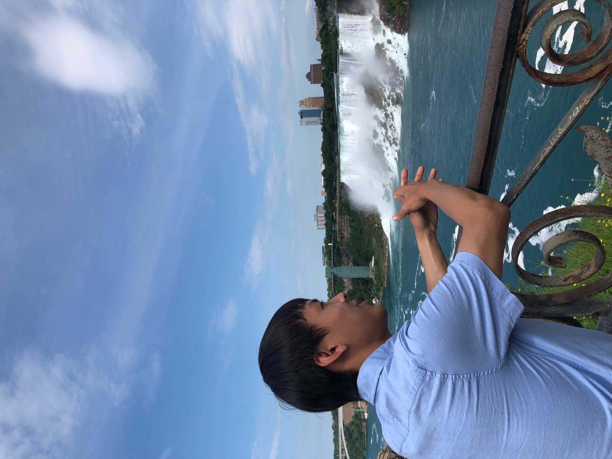

About me
Unlike other students in Taiwan, I quitted my university because I didn't like the system in my univeristy and country that your final scores depended on the tests and the quizzes 100%, and I always wanted to be a PM when I grew up; however, the school could not teach me about it. After that, I decided to have a job first; however, it was a hard time to find a job during covid. As for that, I chose to served the compulsory military to have something to do and some income. Although it was a hard time, I did learn a lot of things that sometimes I should give something a shoot instead of saying no. After finishing my service, I had a choice to go back to my university, find a job, or study abroad, and I told myself why not.
Why not? -Che-Cheng Lee
I arrived in Canada last December, and that was the first time that I saw snow in person. As most of the international students, I came to Canada to study English first, and I chose my languang school in Toronto. It was a wonderful and unforgettable journey in my life that I had made a lot of friends from different countries and gone to many different resorts. It was a stunned experience that I could exchange culture, food, weather, and hobbies with other people from different countries, and I had tried Latin food in my first time, one of my favorite is Cachapas, it is a pancake with butter on it ,and I chose beef as my ingredient. The other dish that impressed me the most was steak with lobster from Chuck's Roadhouse Bar & Grill When it comes to escorts in Toronto, it would be imcomplete without mention to Niagara Falls and Lake Ontario. I would say that these two place were my favorite place in Toronto, not only because of the astonished views but also the atmosphere around them.
Resorts
- Niagara Falls
- Lake Ontario
Dishes
- Cachapas
- Steak & Lobster
After finishing my language school, I moved to Quebec on August 8th and met my distant relative. I had never met her before I came to Canada which is a pretty special experience. During that period, I had gone to Gatineau Park and had a trip to her friend's house was one of the best trip during summer vacation. Although the place that we stayed was not interesting at all, the view around it broke my expections that we could use the river as a mirrior to see reversed image, also we built camp fire at night to had a barbecue. More than that, I could finally fulfill one of my dream that I could have a dog because I hadn't has a chance to have one when I was in Taiwan. He's a foody every time when we had meal, he always came to visit everyone and begged everyone to give him food which was so funny.